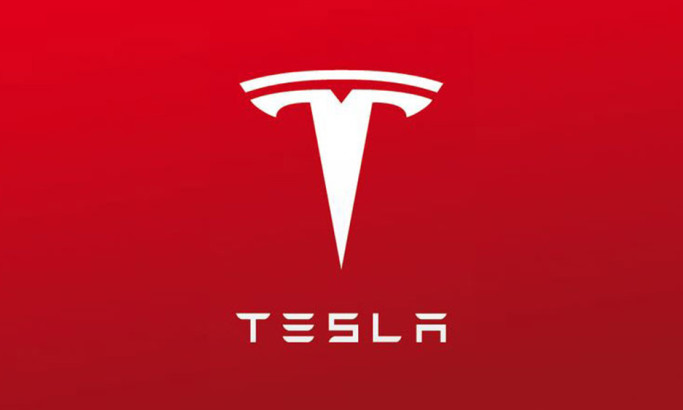

Hi, my name is Swarali Chine!
I'm a Data Engineer located in the Bay Area.
ABOUT ME
Web Dev
Programming
Data & APIs
Analytics
Who am I?
My name is Swarali, and I'm currently a Data Engineer Intern at Tesla based out of the San Francisco Bay Area. I will be graduating in May 2023 from Arizona State University with a Master degree in Computer Science.
PORTFOLIO
-
TeslaData Engineer Intern
- Creating data pipeline using Python, REST API framework for Service Manufacturing and Mega factory operations.
- Establishing consistent data warehouse, data mark through data manipulation processes and ETL pipeline.
- Developing impactful datavisualization with Tableau,React and Web for executives.
- Developing new data tools and web application with Flask and Django for process optimization and improving Tesla service efficiency.
- Technology-Python,SQL,AWS,Flask,Django,WebDevelopment,React.js,JavaScript,Kubernetes,Docker,R, MachineLearning, Automation.
 -
eMetricDevOps Engineer Intern
- Worked on developing operations, automating operational processes, managing continuous delivery systems, and maintaining cloud services.
- Setup CI/CD pipelines using Gitlab and Azure Pipelines.
- Deployed and troubleshooted .NET Core, NodeJS applications and Microservices in Azure Kubernetes Service (AKS).
- Technology - Microsoft Azure, DevOps, Python, Bash, Git, Kubernetes.
-
Yardi SystemsSoftware Engineer
- Development - Worked extensively on end-to-end execution of data migration projects involving ETL, data mapping, conversions. Gathering business requirements, designing and developing various customize reports. Handled large sets of data cleaning and data manipulations in CRM/Voyager product of Yardi.
- Ownership - Resolved data issues related to Balance sheet, Income statement, Ledger Reports, Financial aging reports. Collaborate with management and peers to address complex client requests and resolve issues.
- Mentoring - Delivered training to new employees on Yardi’s product features, in house reporting tool YSR.
- Customer Support - Resolved a total of 750+ critical cases and modification cases. Worked closely with consultants and account managers post live conversion to provide any required technical support.
- Technology - SQL, MS SQL Server, C#, .Net, SSRS, Excel
-
Cloud Computing Project at Arizona State UniversityAWS Face Recognition as a Service(PaaS)
- A real - time face recognition application which is serverless and uses Function as a Service model of cloud computing.
- Raspberry Pi is used as the edge device to record videos and AWS Lambda function based on a container image(deep learning model) is used to provide the face recognition service.
- Technology - Python,Docker, PyTorch, AWS Lambda, AWS S3, AWS DynamoDB,AWS API Gateway, AWS Raspberry Pi
-
Cloud Computing Project at Arizona State UniversityAWS Face Recognition as a Service (IaaS)
- Developed an elastic cloud application that provides image recognition service to the users by using IaaS resources offered by AWS.
- Implemented the application to handle multiple user requests concurrently and be capable of scale-in and scale-out based on the current demand.
- Implemented the whole framework in a multi-tiered architecture developed using React JS on the frontend and Java SpringBoot framework for our REST application.
- Technology - Python,AWS S3, AWS SQS, AWS EC2, Java Spring Boot
-
Semantic Web Mining Project at Arizona State UniversityMovie Recommendation Engine
- The entertainment industry today is massively driven by Movies.Ever since the emergence of on-demand platforms like Netflix, Prime-Video, etc. the need to leverage data and technology to streamline the process of content consumption has increased manifold.
- With the advent of Machine Learning, these platforms can accurately recommend movies to watch based on our watching habits.These models use clustering techniques to identify data points to make accurate predictions.
- In this project, we aim to compare such models using Collaborative Filtering and Matrix Factorization and Item-based KNN, and test it on the 20M MovieLens dataset to predict users' movies to watch.
- Technology - JavaScript,Jupyter Notebook, CSS, HTML, Python, Perl, Shell
-
Machine Learning Project at Arizona State UniversityContinuous Glucose monitoring system
- Developed and trained a machine learning model on various machine learning algorithms viz. Logistic Regression, Random Forest, GaussianNB, SVM, K-Nearest Neighbor to predict the timing of insulin ingestion by guessing meal intake from Continuous Glucose Monitor’s data.
- Technology - Machine Learning, Python, Jupyter Notebook, SARIMA, KNN,Kalman Filter
-
Mobile Computing Project at Arizona State UniversityGesture Classification for SmartHome
- The SmartHome Hand Gestures Classifier; classifies a gesture video of 5 seconds into one of the 17 gestures for controlling smarthome appliances.
- The prediction is done using the CNN algorithm.
- Technology - Python, Deep Learning
-
Mobile Computing Project at Arizona State UniversitySmartHome - Gesture Control Application
- System to watch and practice SmartHome gesture videos. Functionality to watch, record and send videos to cloud server to store using Restful API.
- The user is shown a video of a gesture.
- The user can replay the video at least 3 times.
- Upon clicking the “PRACTICE” button, the user can capture his or her own video through the smartphone’s front camera for a period of at most 5 seconds.
- The videos are uploaded to a server.
- Technology - Java, Android Studio.
-
Mobile Computing Project at Arizona State UniversityCOVID-19 Symptom Checker
- Developed an Android App that measures Heart-Rate, Respiratory-Rate (Using sensor values and Peak detection Algorithm) and collects COVID-19 related symptoms and stores them in a database in the smartphone
- Android App that collects COVID-19 related symptoms and stores them in a database in the smartphone The app has 2 pages.
- In the first page it presents the user with two sign measurement techniques: a) heart rate sensing, and b) respiratory rate sensing.
- Technology - Java, Android Studio.